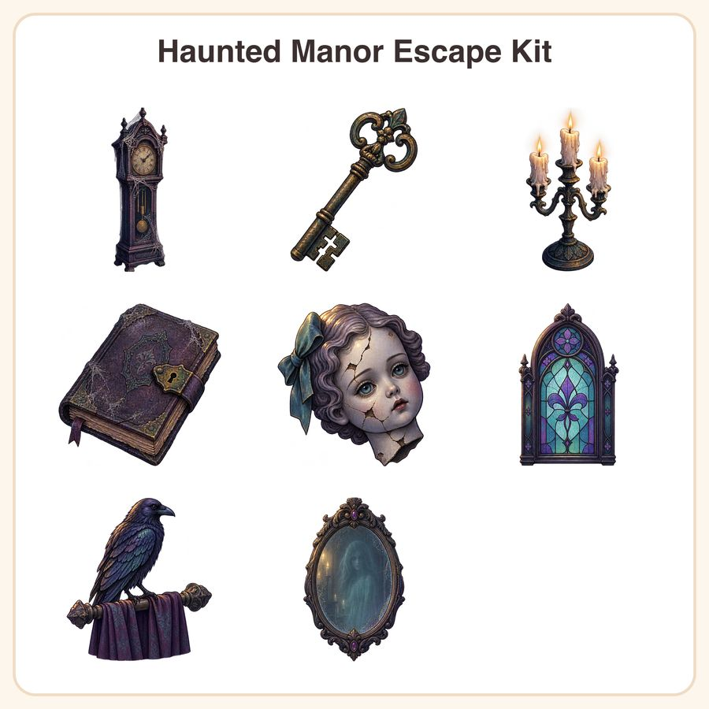

$6.99
View on EtsyGive your point-and-click or puzzle game instant gothic-cozy atmosphere with this 8-piece Haunted Manor Escape Kit, hand-painted in a moody violet-and-teal palette with soft ink outlines and a candlelit glow. What's included (8 unique sprites): • Cobweb-draped grandfather clock icon • Ornate skeleton key with tarnished brass finish • Flickering candelabra prop with dripping wax • Dusty locked diary with clasp • Cracked porcelain doll head item icon • Stained-glass window UI frame • Raven perched on a curtain rod prop • Antique mirror with a faint ghostly reflection File formats & sizes: • 8 PNG files at 1024x1024px (transparent background) • 8 PNG files at 512x512px (transparent background) • 1 preview sheet (JPG) showing all assets together • Delivered as a zipped folder, instant digital download How to use: Drop straight into your game engine (Unity, Godot, GameMaker, RPG Maker, etc.) as item icons, inventory props, or scene decor. Transparent backgrounds mean they layer cleanly over any environment art. License: Personal and small-business commercial use included — use these assets in games you sell or publish, up to 500 units/copies sold. Please don't resell, redistribute, or repackage the raw asset files themselves (as a standalone pack, asset store item, etc.). A note on how these were made: these designs were created by our shop with the help of AI image-generation tools, then curated and prepared for game-ready use. They are not hand-drawn or hand-painted by a human artist. Questions before you buy? Just message us — happy to help you find the right fit for your project. 🕯️